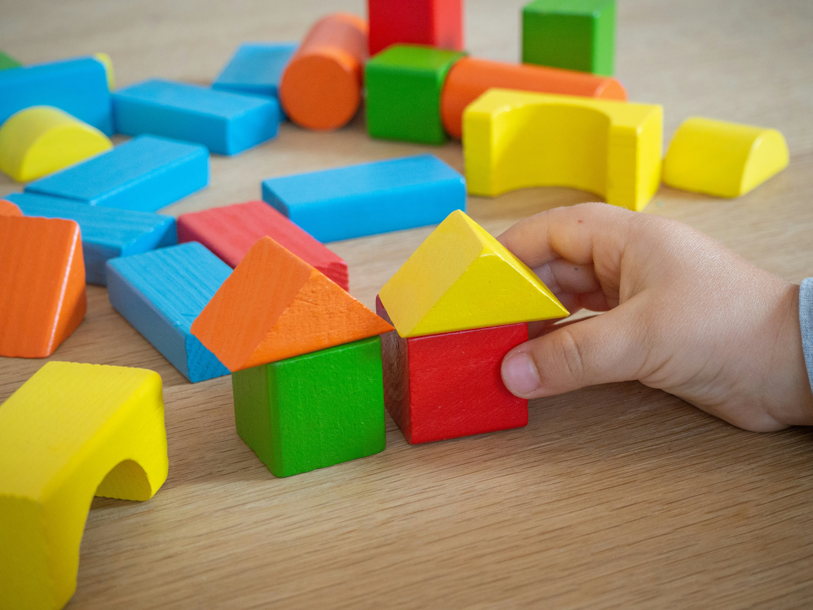
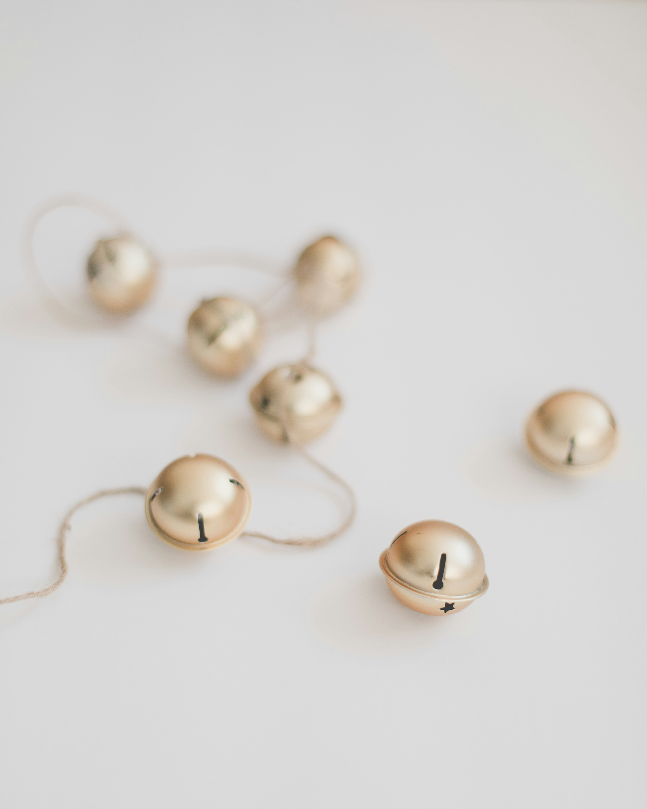
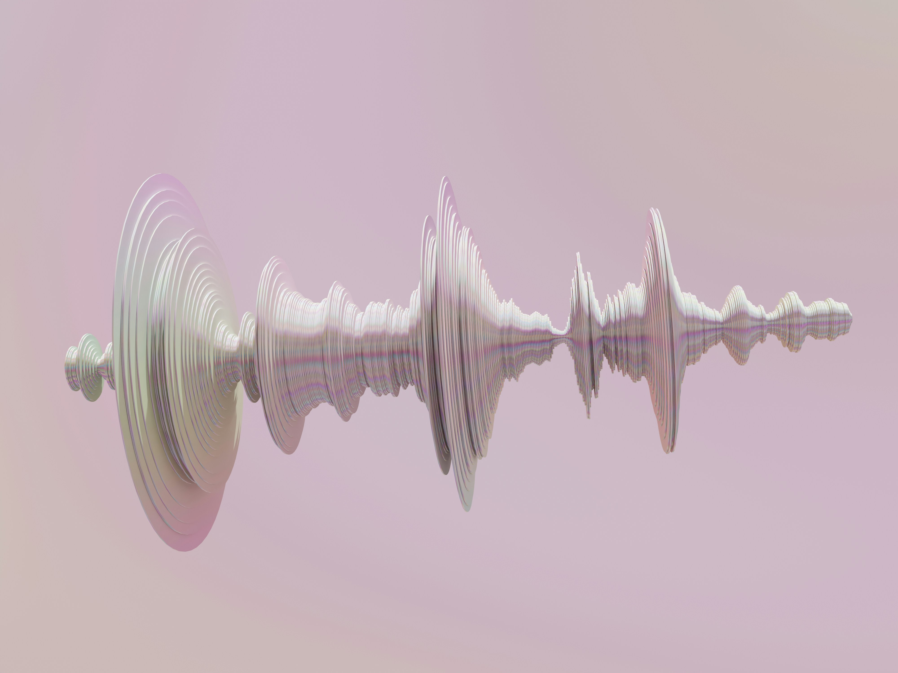
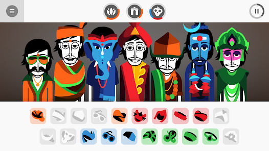

Project Speculation
skip to
Introduction
My project is inspired by a simple childhood toy:
wooden building blocks .
These toys represent an early experience of creativity, where
children can build and imagine freely using a small set of simple
materials. With only a few blocks, children can create castles,
towers, cars, and other imaginative structures.
This sense of limitless creativity forms the foundation of the
project. Expanding on this foundation by exploring how childhood
play can be translated into sound through interactive digital
design. By transforming the act of building with blocks into a
sound-generating system, the tool allows users to explore how visual
creativity can produce playful musical patterns.

The design of the tool is guided by 2 interaction design
principles.
1. Mapping
Using the visual properties of the blocks, such as their shape, colour or position, to influence specific sounds or musical elements, allowing users to hear how their visual arrangements shape the resulting composition.
2. Feedback
Using sound and visual cues to provide clear feedback on the user’s actions, ensuring they can easily perceive when their input has been registered.

Purpose
The purpose of this project is to provide users with a simple
interactive tool where they can build structures using digital
blocks and transform those constructions into sound. By dragging and
arranging blocks on the screen, users are able to experiment with
how different shapes and positions influence the sounds that are
produced.
The end goal of the tool is to allow users to create playful sound
compositions through visual construction. Rather than focusing on
producing perfect or professional music, the tool encourages users
to exploration and experimentation. Allowing users to enjoy the
creative process through simple and intuitive interaction.
Worth
The worth of this project lies in its ability to reconnect users
with the playful and imaginative mindset often associated with
childhood. Many people grow up using simple toys such as building
blocks to explore creativity without rules or expectations. This
project aims to bring back that sense of freedom and curiosity
through an interactive digital experience.
Using the style and colours to make the website feel bright,
playful, and light-hearted. Through colourful blocks, simple
interactions, and toy-like sounds, the tool creates an environment
that encourages users to experiment and have fun. The experience
focuses less on technical skill and more on the joy of discovery.
In doing so, the project highlights how interactive digital tools
can recreate moments of play and imagination, allowing users to take
a small break from everyday pressures while engaging in a simple and
creative activity.

Framing
This project will be developed using HTML, CSS, and JavaScript, with the audio component supported by Tone.js. Tone.js enables the tool to generate playful, toy-like sounds that respond dynamically to user interactions.

Users will drag and place digital blocks onto the interface to build structures. Each block represents a sound element, such as a bell tone, drum hit, or melodic note, while the block’s position influences qualities like pitch or tone. In this way, the spatial arrangement of blocks shapes the resulting sound composition.
Sound playback may occur through a looping sequence or a play
function after the user completes their structure, with the final
method determined through experimentation. This system allows
users to explore how visual construction can translate into sound.
The interaction demonstrates key design principles such as
mapping, where block properties correspond to musical elements,
and feedback, where visual and audio responses immediately reflect
the user’s actions.

Inspiration
Similar to my project, this tool maps a visual input to sound. In
this case, each letter typed into the editor is mapped to a musical
tone, allowing users to generate a sound composition through writing
text. My project follows a similar principle, but instead of mapping
letters to sounds, it maps blocks to sound elements.
Conceptually, both projects explore how simple and familiar tools
can be transformed into creative sound-making systems. The Musical
Text Editor demonstrates how an everyday interaction, such as
typing, can become a playful method of composing sound. This
emphasis on simplicity and accessibility aligns with my project’s
intention of encouraging exploration and experimentation.
The tool also highlights the importance of curiosity and discovery.
By allowing users to experiment freely with letters, the project
invites playful interaction while keeping the interface
light-hearted and approachable. This approach influenced my
project’s direction, particularly the idea that a simple interaction
system can encourage users to explore creativity without requiring
prior musical knowledge.
Musical Text Editor

Patatap

Patatap is an interactive audiovisual tool that maps keyboard inputs
to different sounds and visual animations. Each key on the keyboard
triggers a unique combination of colour, movement, and sound,
creating an expressive and playful experience for the user.
The bright colours and dynamic visuals of Patatap helped inspire the
visual direction of my project. Keeping the colours bright to
attract users hence leading me to thinking of a children's toy. The
tool demonstrates how strong visual feedback can enhance user
interaction, making each input feel responsive and engaging. This
connection between user action and audiovisual response is an
important element that I aim to incorporate into my own project.
Another key aspect of Patatap is the freedom it offers users to
experiment without strict rules or objectives. Users can freely
press keys to generate sounds and visuals, allowing them to create
unique audiovisual compositions through exploration. This sense of
open-ended play strongly relates to my project’s concept of
recreating childhood creativity, where users are encouraged to
experiment and build freely using simple tools.
Incredibox is an interactive music tool that allows users to
create compositions by dragging sound icons onto animated
characters. Each icon represents a musical element, such as beats,
melodies, or vocal effects, which combine to form layered sound
loops. As more elements are added, the composition becomes richer,
creating a structured yet playful music-making experience.
The simplicity of the interface strongly influenced the direction
of my project. Incredibox demonstrates how minimal visual elements
can be used to produce engaging and expressive sound outcomes.
This idea of translating simple visual objects into sound relates
closely to my project, where blocks act as sound triggers. It
highlights how intuitive interactions can encourage users to
experiment without requiring prior musical knowledge.
Another key aspect of Incredibox is its balance between structure
and freedom. While each icon has a predefined sound, users are
free to combine them in different ways to create unique
compositions. This guided exploration ensures that the output
remains cohesive while still allowing for creativity. This
approach informs my project’s design, as I aim to provide users
with simple building elements that can be arranged freely, while
still producing playful and harmonious sound results.
Incredibox

Seaquence

Seaquence is an experimental music tool where users create small
sea creatures that generate sound. Each creature produces a unique
audio loop, and as more creatures are added, a layered musical
environment begins to form. The interaction is both visual and
auditory, as users design the appearance of each creature while
simultaneously shaping the overall soundscape.
The playful and imaginative nature of Seaquence closely relates to
my project, particularly in how visual creation directly
influences sound. This connection between designing an object and
hearing its corresponding audio aligns with my concept of using
blocks as sound elements, where building visually becomes a form
of composing music. By showing how simple visual elements can
generate evolving soundscapes, Seaquence demonstrates the
potential of interactive tools to encourage exploration and
creativity.
However, compared to tools like Patatap and Incredibox, Seaquence
uses a more complex interaction system. Its layered mechanics and
evolving creatures add depth but can make the experience feel less
immediate and intuitive. This highlights the importance of
simplicity in my own project, where I aim to keep interactions
clear and accessible, enabling users to quickly engage in playful
experimentation without needing to navigate complicated systems.
Interactive Experiments
Information Design
Through this experiment, I found that arranging the controls in a
horizontal row created a more structured and symmetrical layout.
This made it easier for users to navigate the interface, adjust
settings, and test different sound variations without confusion. The
clear alignment of elements helped communicate their function more
effectively, improving the overall usability of the tool.
Translating this into my project, I will consider how layout can
guide user interaction and make the experience more intuitive. I
plan to experiment with different arrangements of blocks and
controls to determine which layout best supports playful exploration
while maintaining clarity and ease of use.
Mapping
Through this experiment, I developed a stronger understanding of how
to use Konva.js and explored how input ranges can be applied in
unconventional ways to manipulate colour dynamically. This allowed
me to move beyond standard UI controls and experiment with more
expressive interactions, making the experience feel more engaging
and responsive.
Translating this into my project, I aim to use colour as an
additional layer to influence sound interaction. By linking visual
changes with audio responses, I can create a more cohesive and
intuitive experience where users can both see and hear the impact of
their actions. This approach encourages exploration while
reinforcing the relationship between visual input and sound output.
Feedback
This experiment explores how additional layers of feedback can
enhance user interaction. Beyond the basic visual and audio
responses, I introduced a delayed feedback element where, after two
seconds, the pitch increases and a text message appears saying “okay
stop.”
This addition was designed to signal to the user that they have held
the interaction for a significant duration, while also adding a
sense of personality to the experience. It demonstrates how small,
timed responses can make interactions feel more expressive and
engaging, rather than purely functional.
Translating this into my project, I aim to incorporate similar
layered feedback within the block interactions, giving more
personality to the website. This will make the website more playful,
reinforcing the childlike and exploratory nature of the tool.
jump back
Jannalyn Tan- s4056775